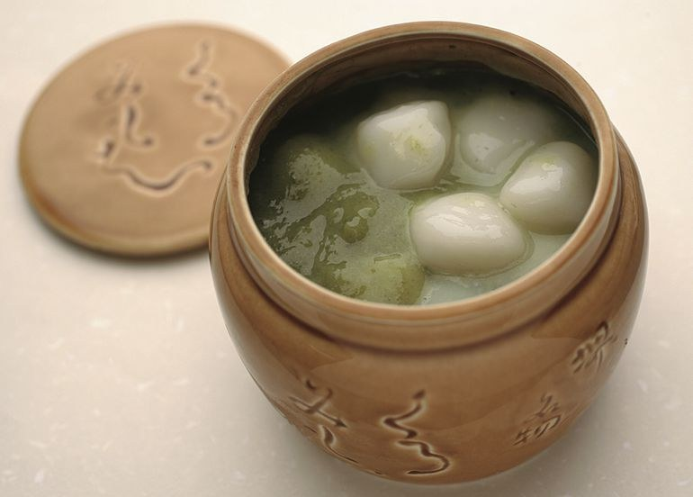
| 営業時間 | 10:00〜17:00（店内飲食の受付は16:45まで／売り切れ次第終了） |
|---|---|
| 定休日 | 火・水曜（国民の祝日は営業、振替で別日休みあり） |
| 住所 | 大阪府堺市堺区新在家町東1丁2番1号 |
| 予約 | 不可 — ☎ 072-233-1218 ／ 公式サイト |
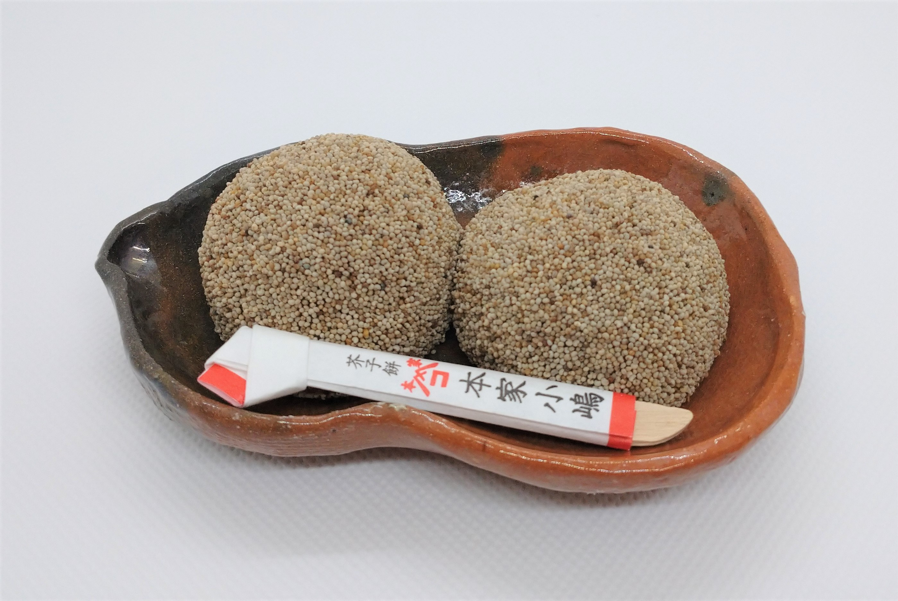
| 営業時間 | 9:00〜17:00（売り切れ次第閉店） |
|---|---|
| 定休日 | 月曜 |
| 住所 | 大阪府堺市堺区大町西1丁2-21 |
| 予約 | 不可（泰平餅のみ前日予約） — ☎ 072-232-1876 ／ 公式サイト |
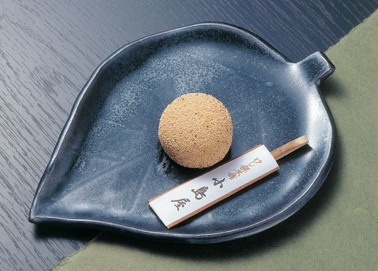
| 営業時間 | 8:30〜18:00（2階茶房あり） |
|---|---|
| 定休日 | 要確認（公式に記載なし） |
| 住所 | 大阪府堺市堺区宿院町東1丁1-23 |
| 予約 | 不要 — ☎ 072-232-0313 ／ 公式サイト |
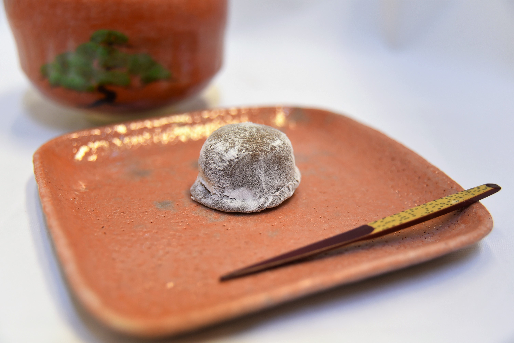
| 営業時間 | 9:00〜17:00 |
|---|---|
| 定休日 | 日曜 |
| 住所 | 大阪府堺市堺区車之町東2丁1-11 |
| 予約 | 不要 — ☎ 072-232-3835 ／ 公式サイト |
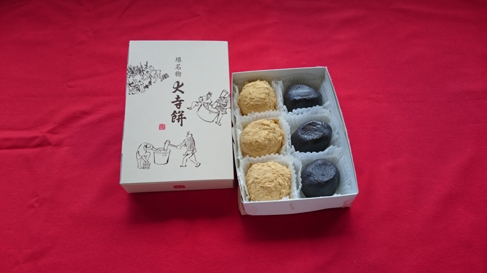
| 営業時間 | 9:30〜17:30 |
|---|---|
| 定休日 | 火・水曜 |
| 住所 | 大阪府堺市堺区少林寺町西4丁1-27 |
| 予約 | 不要 — ☎ 072-222-1223 |
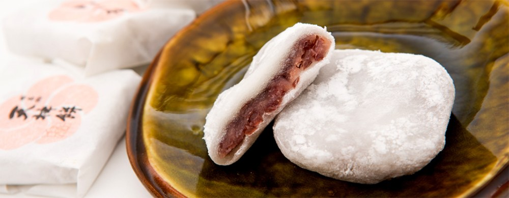
| 営業時間 | 9:30〜18:00（日・祝は9:00〜18:00） |
|---|---|
| 定休日 | 月曜（祝・祭日は営業） |
| 住所 | 大阪府堺市堺区車之町東3丁1-1 |
| 予約 | 不要 — ☎ 072-233-0987 ／ 公式サイト |
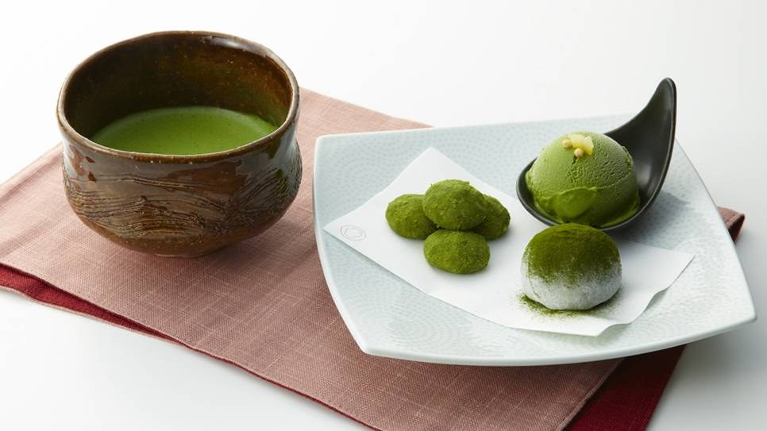
| 営業時間 | 喫茶11:00〜17:30／物販10:30〜18:00 |
|---|---|
| 定休日 | 火曜（祝日の場合は営業）・年末年始 |
| 住所 | 大阪府堺市堺区九間町東1丁1-2 |
| 予約 | 不可（席は先着） — ☎ 072-227-7809 ／ 公式サイト |
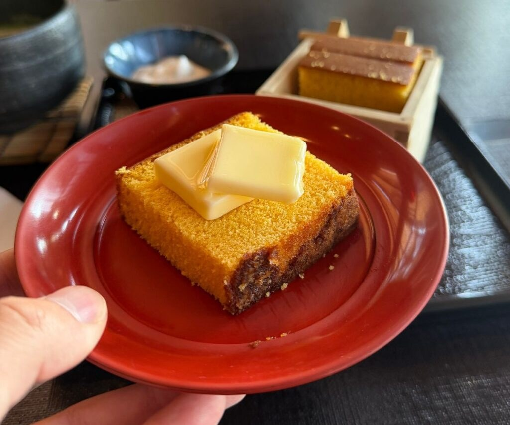
| 営業時間 | 9:00〜18:30（軽食は17:30まで／甘味は18:00まで） |
|---|---|
| 定休日 | 木曜（祝日は営業） |
| 住所 | 大阪府堺市堺区北三国ヶ丘町1丁2-36 |
| 予約 | 可 — ☎ 072-222-2411 ／ 公式サイト |
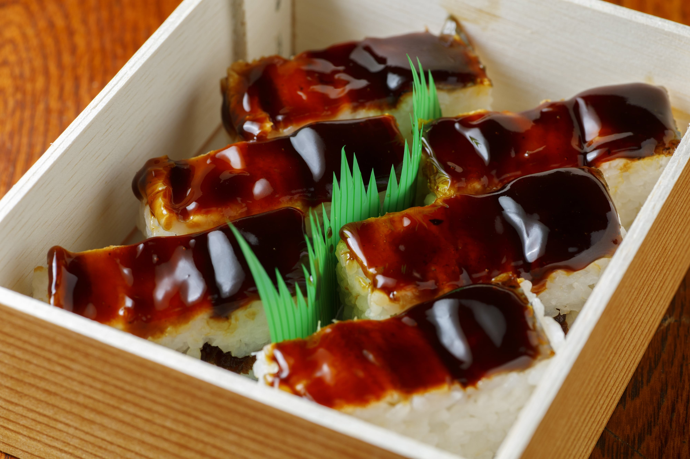
| 営業時間 | 9:30〜売り切れ次第終了 |
|---|---|
| 定休日 | 月曜・火曜 |
| 住所 | 大阪府堺市堺区出島町1-1-22 |
| 予約 | 可（電話。1週間前から受付との利用者情報あり） — ☎ 072-241-4593 |
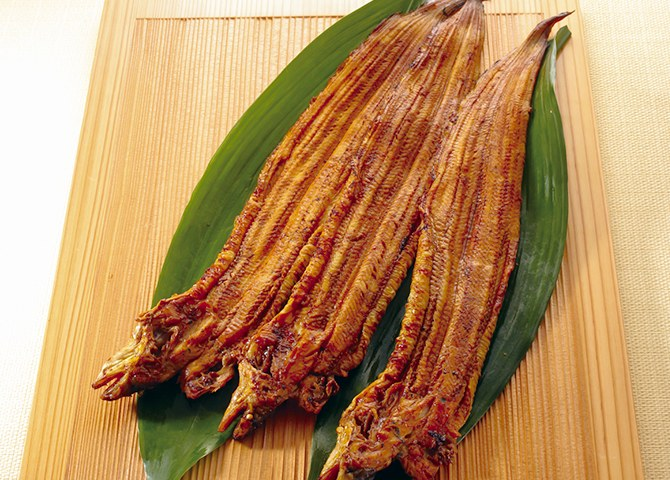
| 営業時間 | 8:00〜16:00（土曜は14:00まで）※直売。訪問前に要確認 |
|---|---|
| 定休日 | 日曜・祝日（水曜休との情報もあり要確認） |
| 住所 | 大阪府堺市堺区楠町3丁1-26 |
| 予約 | 不要（大量注文は要予約） — ☎ 072-245-1779 ／ 公式サイト |
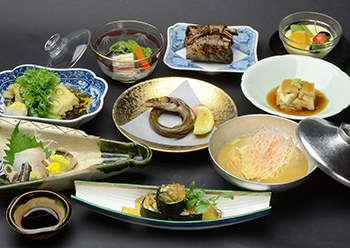
| 営業時間 | 昼11:00〜14:00（L.O.13:30）／夜は前日までの完全予約制（17:00〜） |
|---|---|
| 定休日 | 水曜（10名以上の予約時は水曜も営業） |
| 住所 | 大阪府堺市西区平岡町282-1（家原寺前） |
| 予約 | 要（夜は前日までの完全予約制） — ☎ 072-271-0058 ／ 公式サイト |
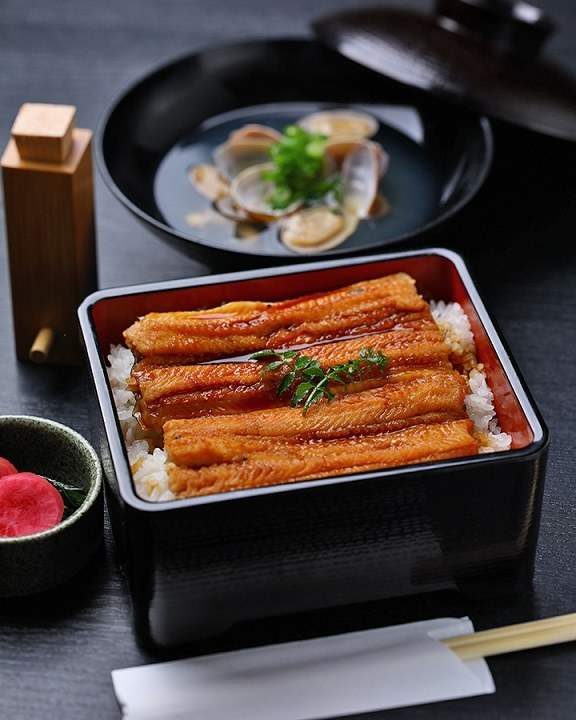
| 営業時間 | 17:00〜24:00 |
|---|---|
| 定休日 | 月曜 |
| 住所 | 大阪府堺市堺区栄橋町1-6-2 |
| 予約 | 推奨（数量限定のため事前問い合わせ） — ☎ 050-5487-7118（ぐるなび公式ページ記載） ／ 公式サイト |
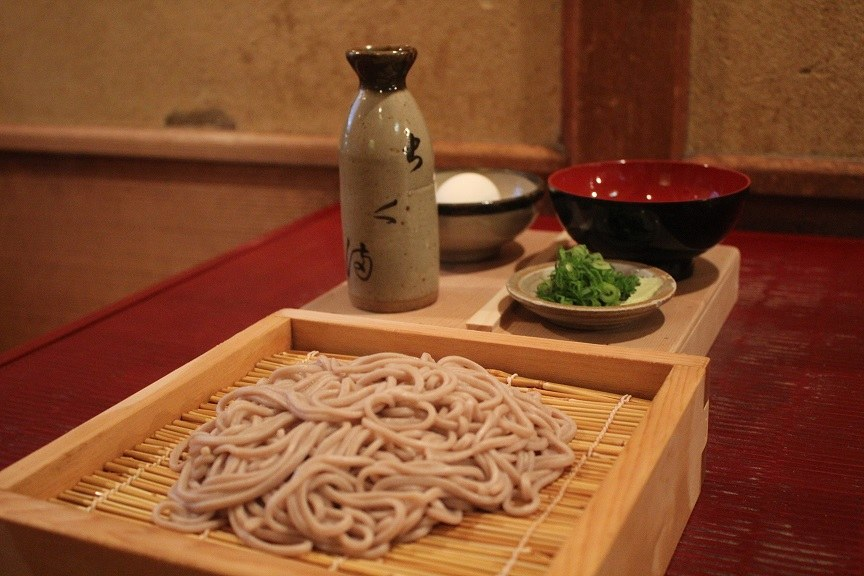
| 営業時間 | 10:30〜20:00（L.O.19:30） |
|---|---|
| 定休日 | 月曜（祝日の場合は営業し翌日休）・第2火曜 |
| 住所 | 大阪府堺市堺区宿院町西1丁1-16 |
| 予約 | 不可 — ☎ 072-232-0093 |
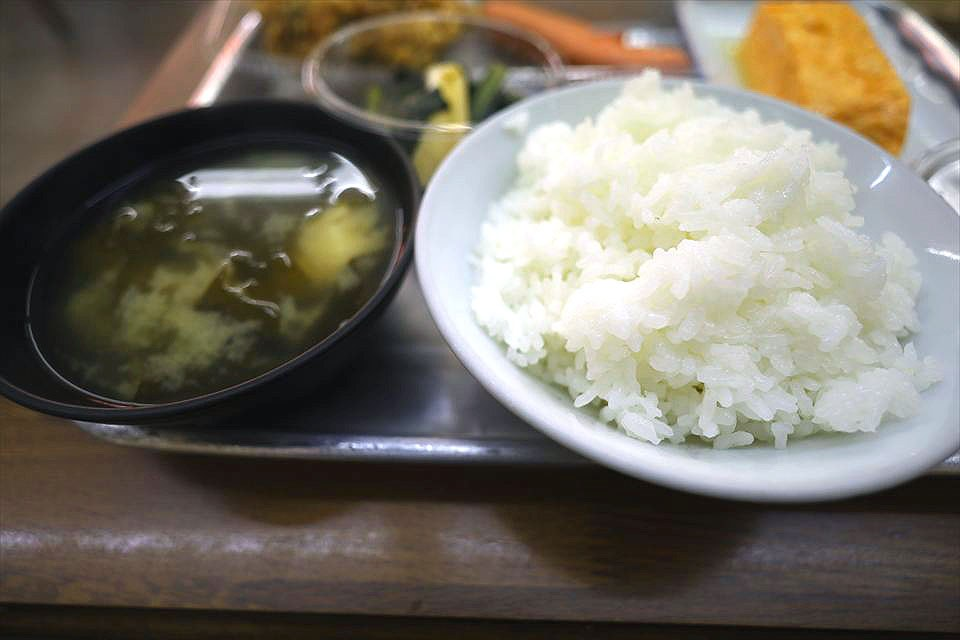
| 営業時間 | 8:30頃〜14:00頃（売り切れ次第終了） |
|---|---|
| 定休日 | 火・水曜（要確認） |
| 住所 | 大阪府堺市堺区新在家町西1-1-30 |
| 予約 | 不可 — ☎ 072-238-0934 |
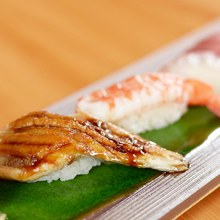
| 営業時間 | 昼 11:30〜13:30（L.O.13:00、土日のみ）／夜 17:00〜（月・火・木〜日） |
|---|---|
| 定休日 | 水曜 |
| 住所 | 大阪府堺市堺区中之町東1丁2-26-2 |
| 予約 | 推奨 — ☎ 072-221-2686 ／ 公式サイト |
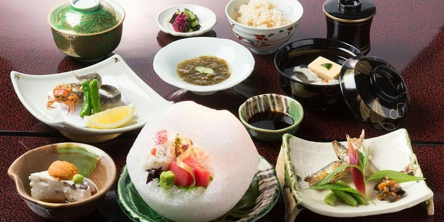
| 営業時間 | 昼 11:30〜15:00（L.O.13:30、2日前までの予約制）／夜 17:00〜23:00（L.O.21:00〜21:30） |
|---|---|
| 定休日 | 日曜・祝日（12月の昼営業は休み） |
| 住所 | 大阪府堺市堺区大町東1-2-4 |
| 予約 | 要 — ☎ 072-232-1236 ／ 公式サイト |
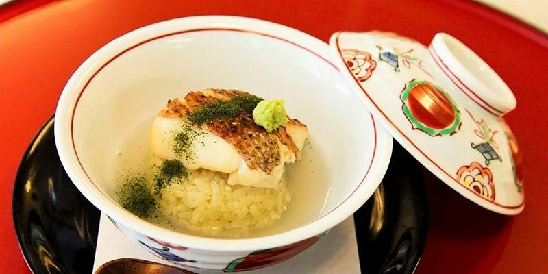
| 営業時間 | 昼 12:00〜14:00／夜 18:00〜21:00 |
|---|---|
| 定休日 | 不定休 |
| 住所 | 大阪府堺市堺区大町東1丁2-20 |
| 予約 | 要 — ☎ 070-4074-1212 ／ 公式サイト |
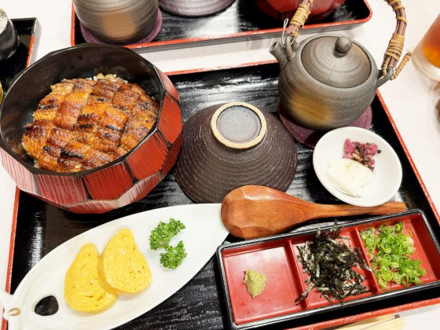
| 営業時間 | 11:00〜14:00／17:00〜21:00（資料により22:00までの記載あり） |
|---|---|
| 定休日 | 水曜 |
| 住所 | 大阪府堺市堺区寺地町東1丁1-32 |
| 予約 | 推奨 — ☎ 072-229-3147 |
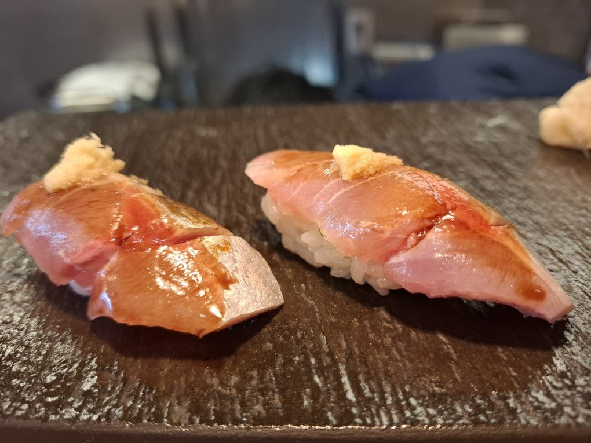
| 営業時間 | 11:00〜21:00（L.O.20:00） |
|---|---|
| 定休日 | 火曜 |
| 住所 | 大阪府堺市堺区中瓦町2丁3-20 |
| 予約 | 不要 — ☎ 080-4826-4468 |
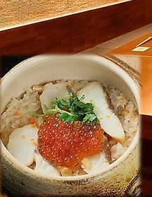
| 営業時間 | 11:30〜14:30（L.O.14:00）／17:30〜22:00（L.O.21:30） |
|---|---|
| 定休日 | 水曜（資料により月曜・日曜不定休の記載あり。要確認） |
| 住所 | 大阪府堺市中区深井清水町3809-1 |
| 予約 | 推奨 — ☎ 072-242-6993 |
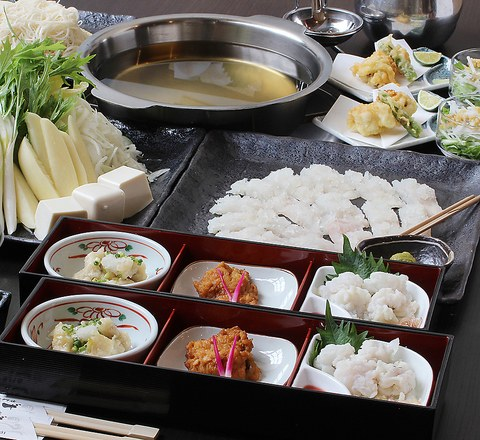
| 営業時間 | 17:00〜24:00（料理L.O.23:00、ドリンクL.O.23:30） |
|---|---|
| 定休日 | 月曜（4〜9月。10〜3月は無休） |
| 住所 | 大阪府堺市西区鳳中町2-48-5 |
| 予約 | 推奨 — ☎ 072-263-0031 ／ 公式サイト |
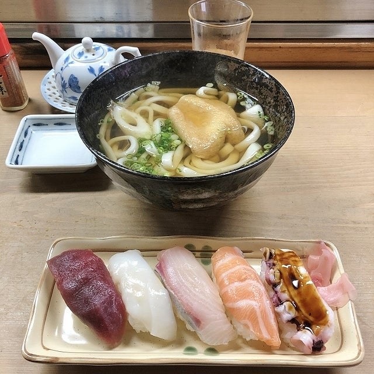
| 営業時間 | 11:30〜14:00／16:30〜22:00 |
|---|---|
| 定休日 | 水曜 |
| 住所 | 大阪府堺市西区鳳東町1丁35-1 |
| 予約 | 不要 — ☎ 072-272-2909 |
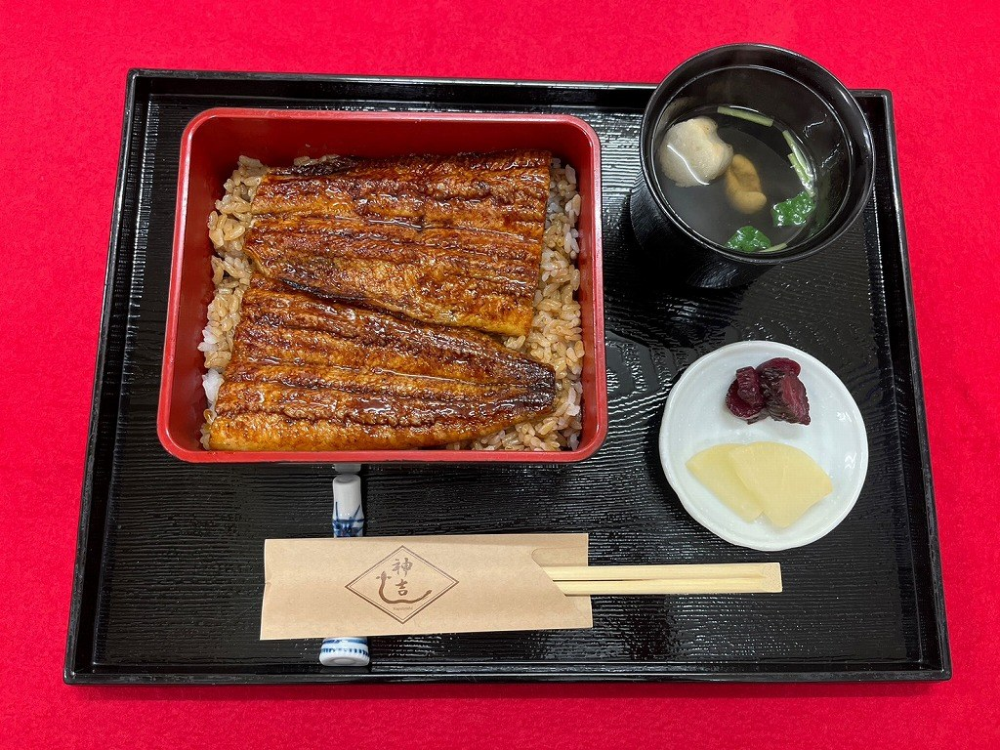
| 営業時間 | 平日 11:00〜14:30／土日祝 11:00〜14:30・17:00〜19:30（売り切れ次第終了） |
|---|---|
| 定休日 | 水曜、第1・3・5火曜 |
| 住所 | 大阪府堺市南区岩室102-1 |
| 予約 | 可 — ☎ 072-234-3657 ／ 公式サイト |
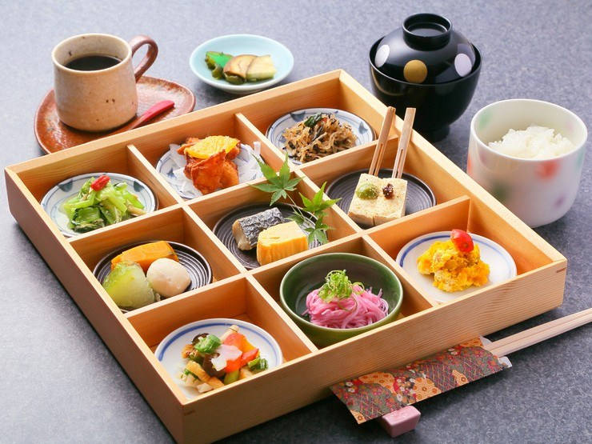
| 営業時間 | 11:30〜15:00（L.O.14:30）／17:00〜22:30（L.O.22:00） |
|---|---|
| 定休日 | 水曜 |
| 住所 | 大阪府堺市南区茶山台1-2-3 泉ヶ丘ひろば専門店街1F |
| 予約 | 可 — ☎ 072-284-5115 |
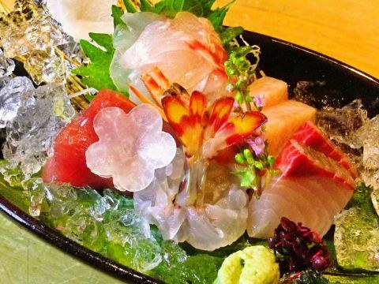
| 営業時間 | 11:30〜15:00（L.O.14:30）／17:00〜22:00（L.O.21:30） |
|---|---|
| 定休日 | 火曜（祝日の場合は営業） |
| 住所 | 大阪府堺市北区新金岡町5-3-516 |
| 予約 | 推奨 |
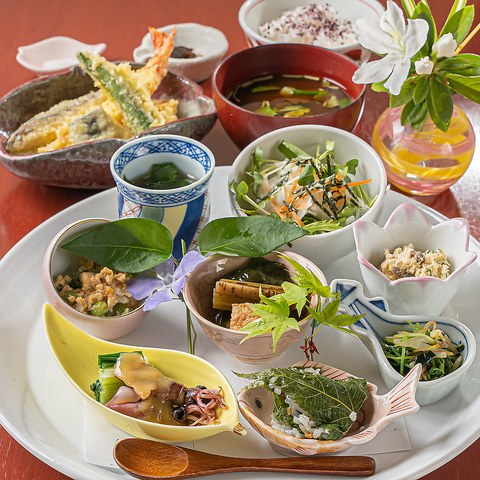
| 営業時間 | 11:30〜14:00（L.O.13:30）／17:30〜22:00（L.O.21:30） |
|---|---|
| 定休日 | 月曜（臨時休業あり） |
| 住所 | 大阪府堺市北区北花田町3-33-5 |
| 予約 | 推奨 |
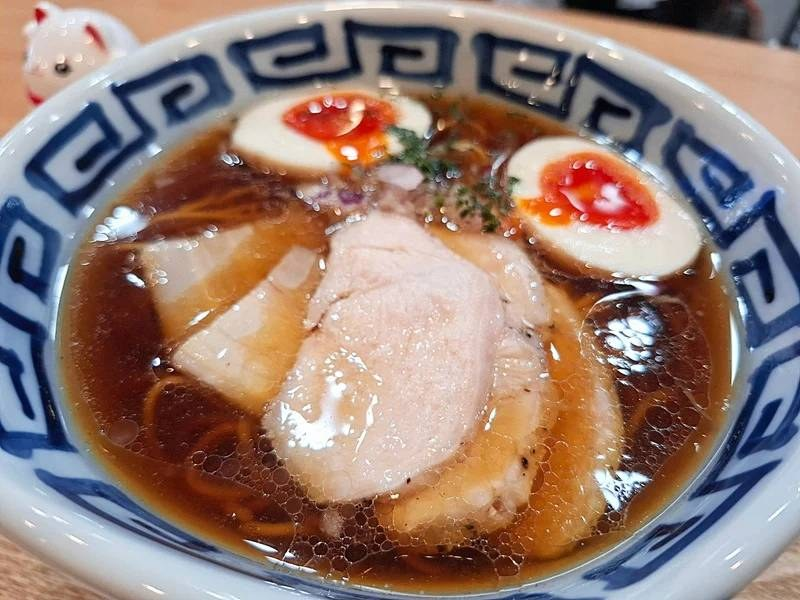
| 営業時間 | 11:00〜14:00 |
|---|---|
| 定休日 | 水曜・日曜 |
| 住所 | 大阪府堺市堺区柳之町西3丁2-10 |
| 予約 | 不可 |
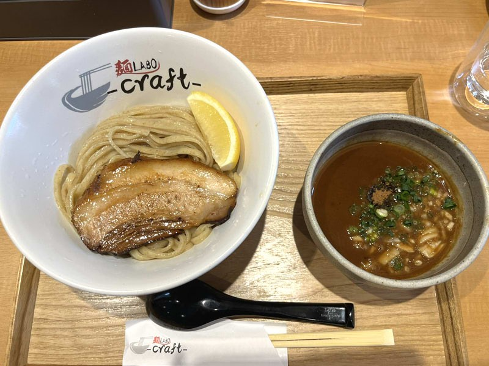
| 営業時間 | 11:00〜14:30／17:30〜22:00（土曜・祝前日は23:00まで） |
|---|---|
| 定休日 | 不定休（日・祝はランチなし） |
| 住所 | 大阪府堺市堺区北瓦町2丁1-12 北瓦ビル1階 |
| 予約 | 不可 — 公式サイト |
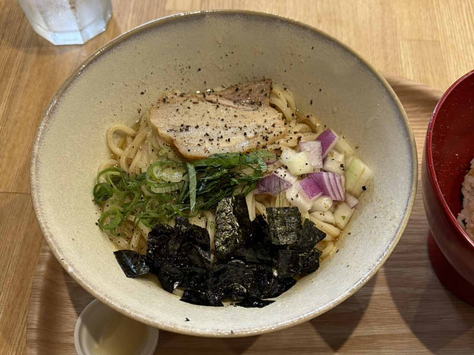
| 営業時間 | 11:00〜15:00（料理L.O.14:30） |
|---|---|
| 定休日 | 水曜 |
| 住所 | 大阪府堺市北区北長尾町1-2-9 |
| 予約 | 不可 — 公式サイト |
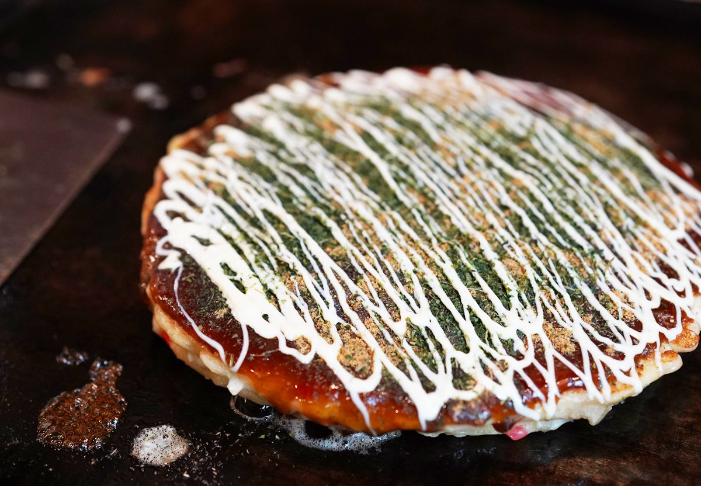
| 営業時間 | 11:30〜14:00／17:00〜22:00（L.O.21:00） |
|---|---|
| 定休日 | 月曜・第3日曜 |
| 住所 | 大阪府堺市堺区中瓦町1丁2-13 |
| 予約 | 可 — ☎ 072-233-1654 ／ 公式サイト |
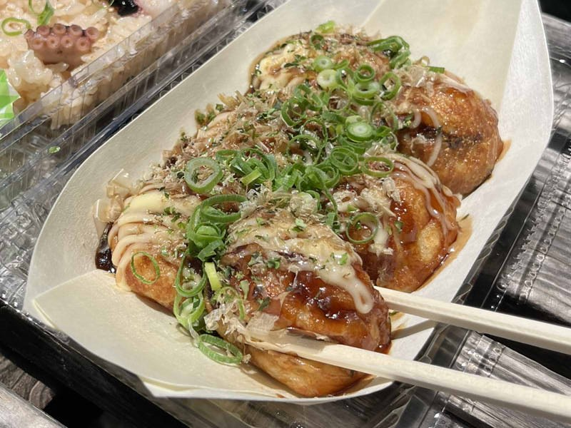
| 営業時間 | 11:00〜20:00 |
|---|---|
| 定休日 | 月曜（祝日の場合は翌火曜） |
| 住所 | 大阪府堺市堺区向陵東町3丁6-35 |
| 予約 | 不要 — ☎ 072-242-8894 ／ 公式サイト |
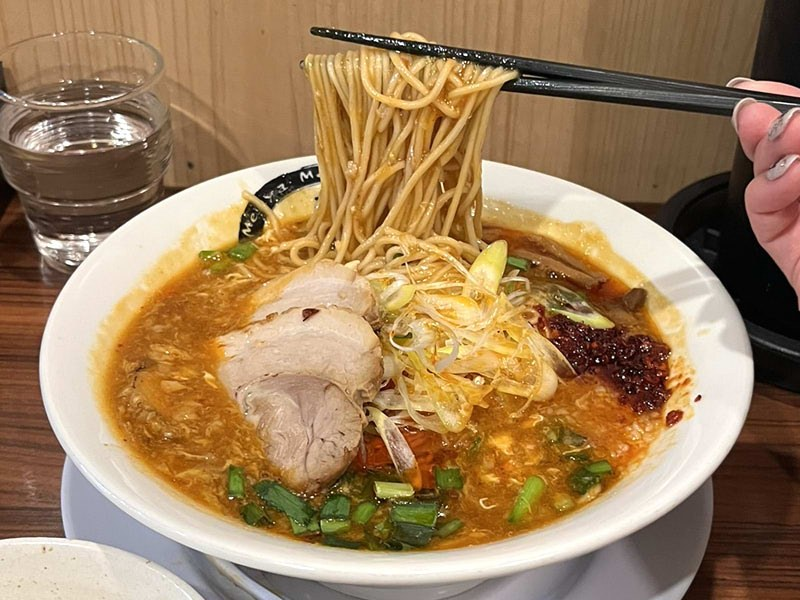
| 営業時間 | 11:00〜15:00／18:00〜23:45 |
|---|---|
| 定休日 | 無休 |
| 住所 | 大阪府堺市北区中百舌鳥町5-666-2-101 |
| 予約 | 不可 — 公式サイト |
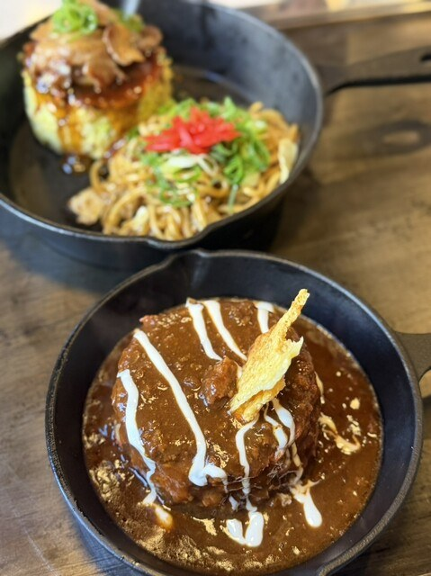
| 営業時間 | ランチ・ディナー営業（詳細は要確認） |
|---|---|
| 定休日 | 要確認 |
| 住所 | 大阪府堺市北区中長尾町4丁目4-15 |
| 予約 | 推奨 |
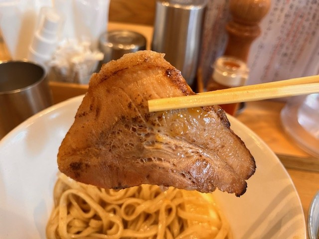
| 営業時間 | 11:00〜15:00（L.O.15:00）／17:00〜21:00（L.O.20:30） |
|---|---|
| 定休日 | 日曜（麺・スープ切れで早じまいあり） |
| 住所 | 大阪府堺市中区新家町349-13 |
| 予約 | 不可 |
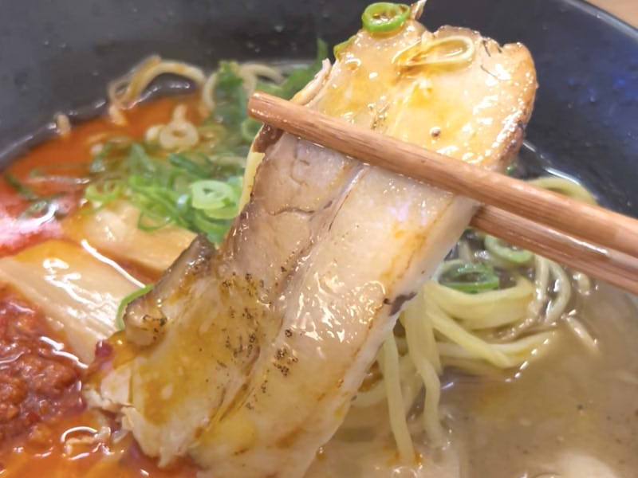
| 営業時間 | 11:00〜14:00（ラーメンのみ）／17:00〜22:30（居酒屋メニューとラーメン） |
|---|---|
| 定休日 | 月曜 |
| 住所 | 大阪府堺市中区深井沢町 |
| 予約 | 不要 — ☎ 072-201-0555 ／ 公式サイト |
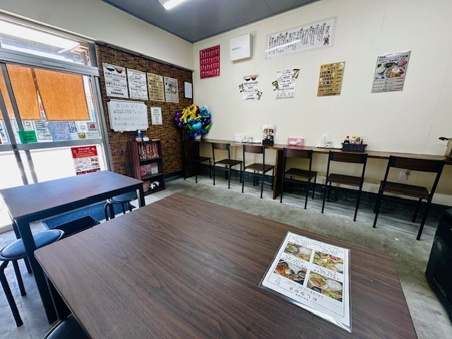
| 営業時間 | 11:00〜14:00 |
|---|---|
| 定休日 | 土曜・日曜（その他の休みはインスタグラムで告知） |
| 住所 | 大阪府堺市東区北野田555-10 |
| 予約 | 不要 |
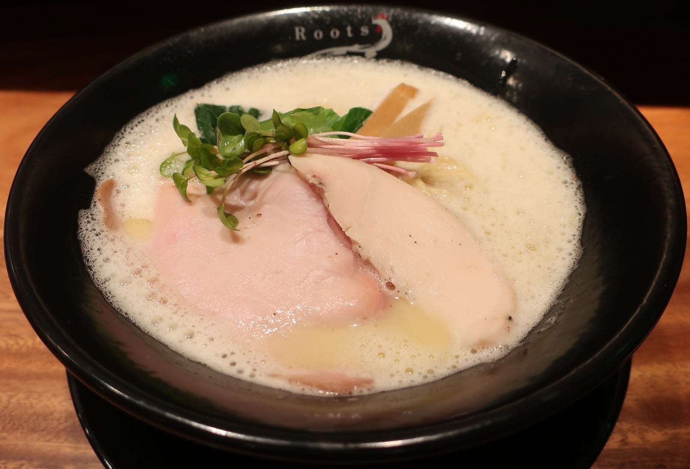
| 営業時間 | 10:30〜14:30／18:00〜21:30 |
|---|---|
| 定休日 | 要確認 |
| 住所 | 大阪府堺市西区鳳東町1丁47-1 |
| 予約 | 不可 — 公式サイト |
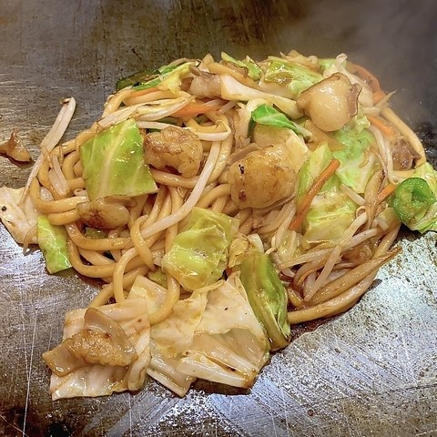
| 営業時間 | 11:30〜14:00（L.O.13:30）／17:00〜22:00（L.O.21:30） |
|---|---|
| 定休日 | 月曜・火曜 |
| 住所 | 大阪府堺市西区北条町2-5-12 |
| 予約 | 可 — ☎ 072-230-4308 ／ 公式サイト |
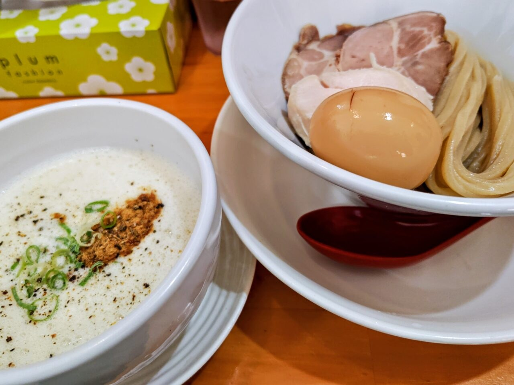
| 営業時間 | 要確認（売り切れ次第終了） |
|---|---|
| 定休日 | 要確認 |
| 住所 | 大阪府堺市美原区丹上 |
| 予約 | 不可 |
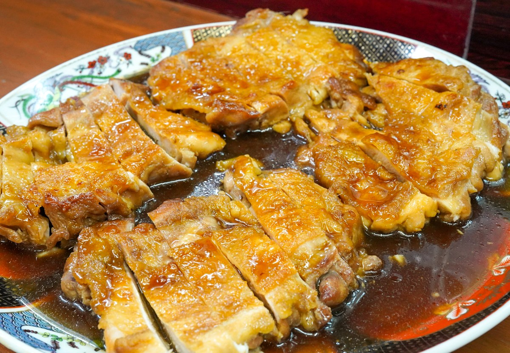
| 営業時間 | 15:30〜23:00（L.O.22:30） |
|---|---|
| 定休日 | 水曜 |
| 住所 | 大阪府堺市堺区中瓦町2-3-5 |
| 予約 | 不要 — ☎ 072-260-4994 ／ 公式サイト |
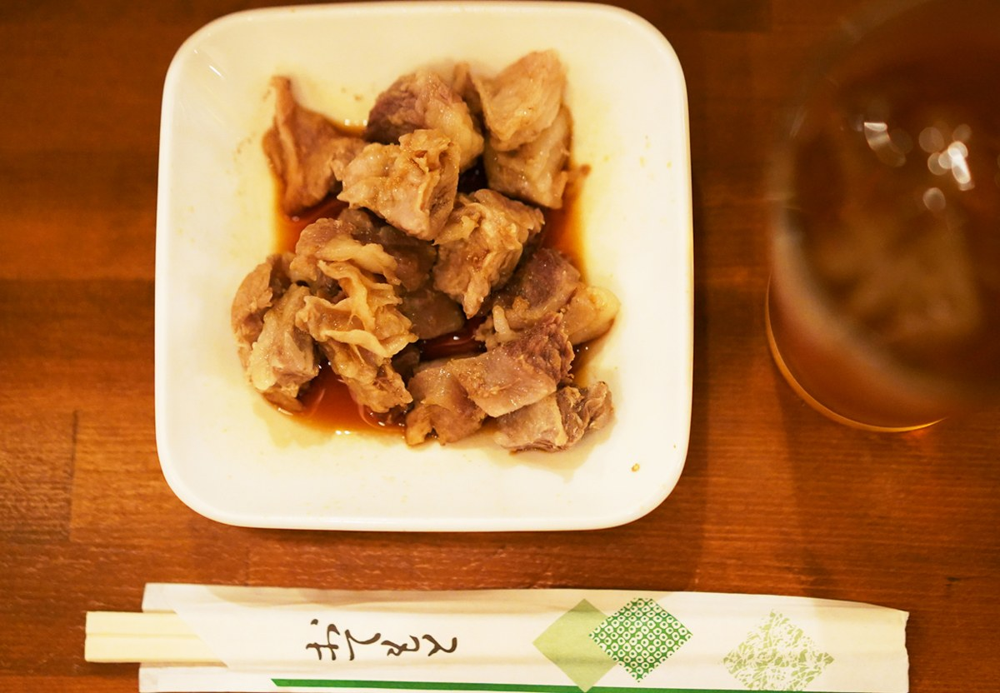
| 営業時間 | 9:00〜22:30 |
|---|---|
| 定休日 | 日曜・祝日 |
| 住所 | 大阪府堺市堺区中瓦町2丁3-18 |
| 予約 | 不要 — ☎ 072-232-3633 |
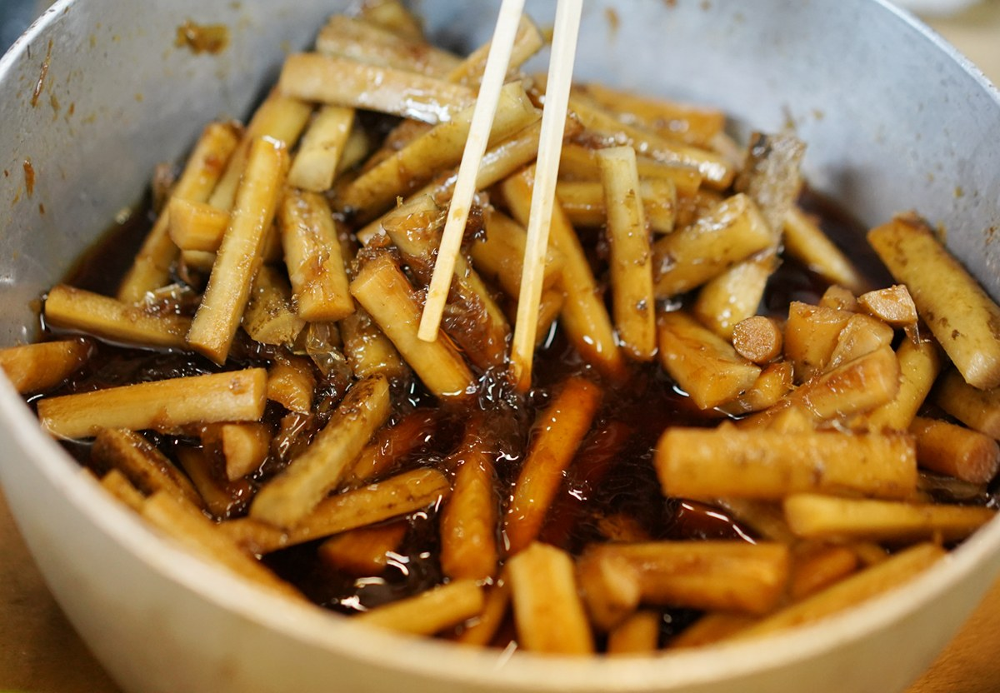
| 営業時間 | 16:00〜21:00（昼から開く日もある） |
|---|---|
| 定休日 | 日曜・祝日 |
| 住所 | 大阪府堺市堺区中瓦町2丁3-18 |
| 予約 | 不要 — ☎ 072-221-3769 |
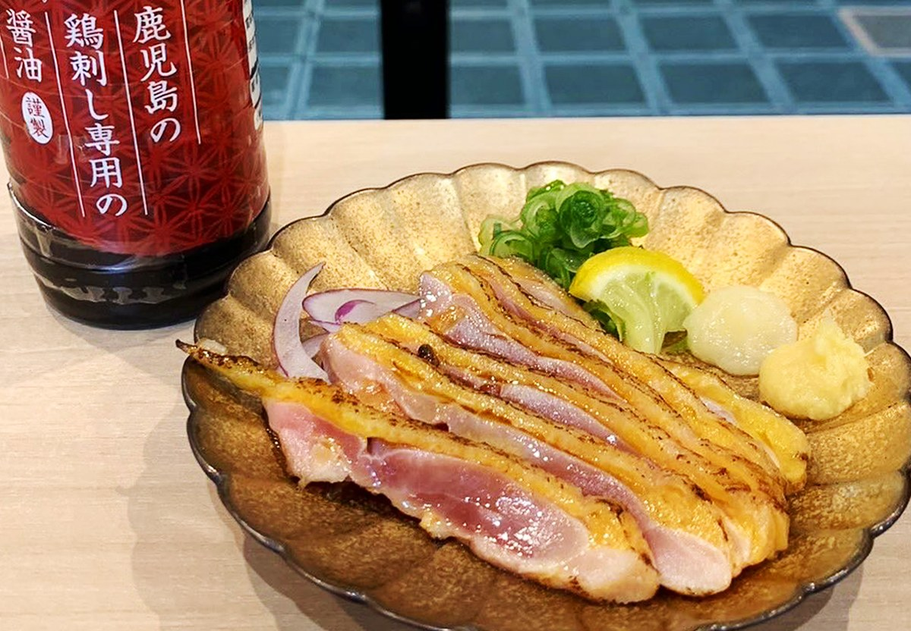
| 営業時間 | 12:00〜22:30（L.O.22:00）／日曜 12:00〜21:30（L.O.21:00） |
|---|---|
| 定休日 | 火曜 |
| 住所 | 大阪府堺市堺区中瓦町2-3-5 |
| 予約 | 不要 — ☎ 072-200-3277 ／ 公式サイト |
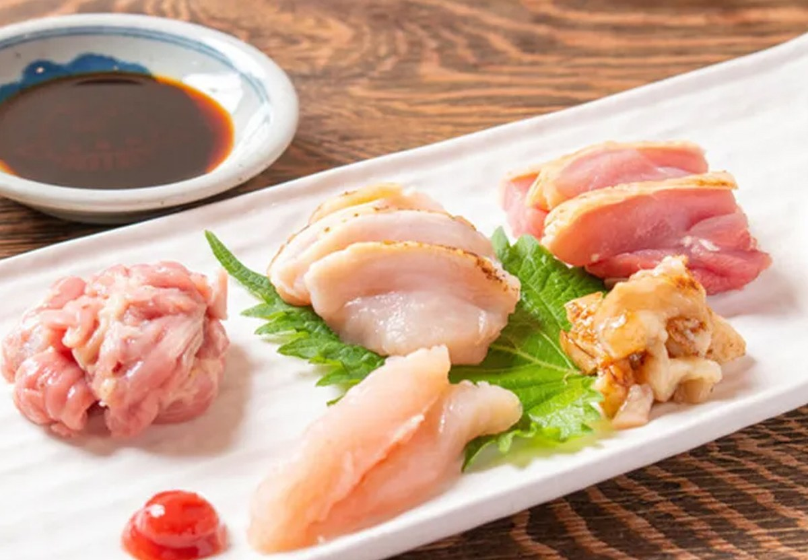
| 営業時間 | 17:00〜23:00（L.O.22:00） |
|---|---|
| 定休日 | 日曜・月曜 |
| 住所 | 大阪府堺市堺区中瓦町1-4-4 |
| 予約 | 推奨 — ☎ 072-275-7315 ／ 公式サイト |
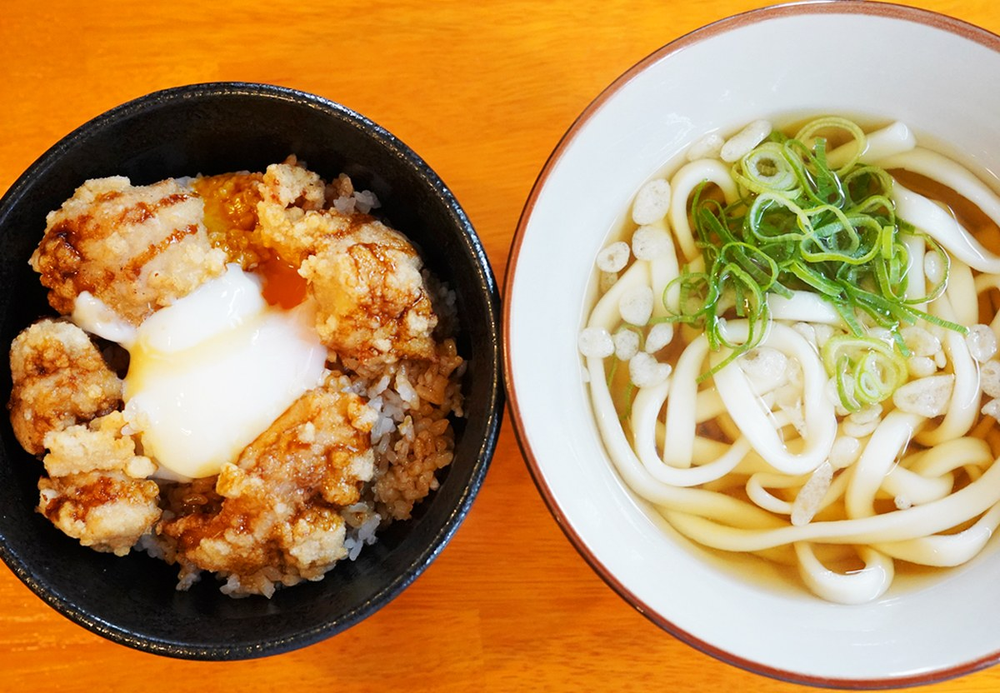
| 営業時間 | 17:30〜22:30（L.O.22:00）／11:00〜14:30（月〜金、L.O.14:00） |
|---|---|
| 定休日 | 日曜・祝日 |
| 住所 | 大阪府堺市堺区北瓦町2丁1-5 堺東Denoビル |
| 予約 | 可 — 公式サイト |
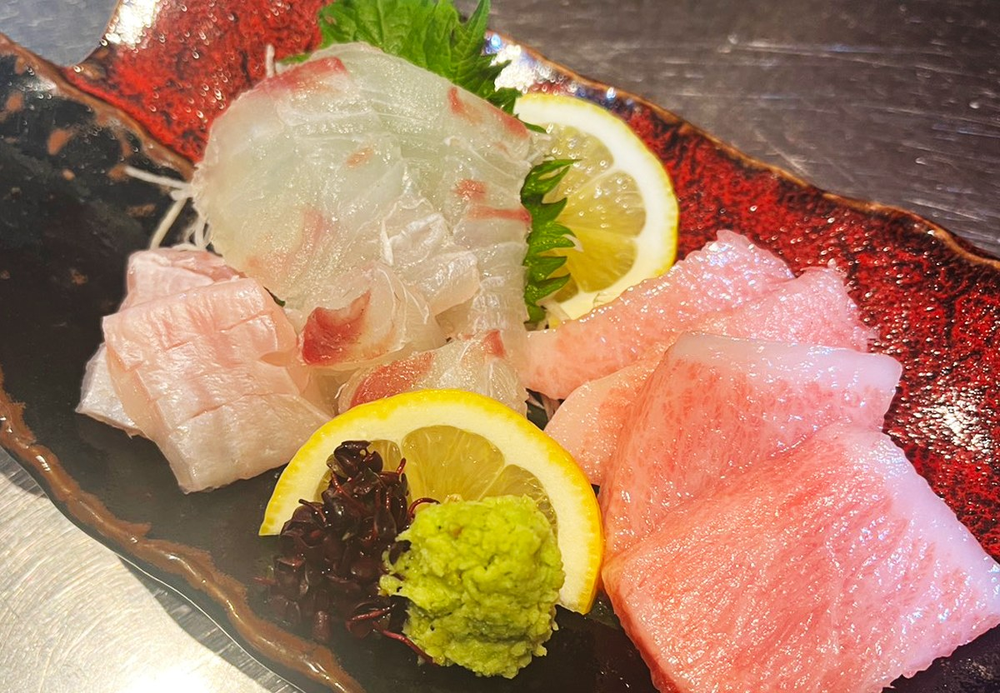
| 営業時間 | 月〜木 17:00〜24:00／金 17:00〜24:30／土 16:30〜24:30／日 16:30〜22:30 |
|---|---|
| 定休日 | 水曜 |
| 住所 | 大阪府堺市堺区中瓦町2丁2-6 |
| 予約 | 推奨 — ☎ 072-275-7764 ／ 公式サイト |
| 営業時間 | 17:00〜22:30 |
|---|---|
| 定休日 | 日曜 |
| 住所 | 大阪府堺市堺区中瓦町2丁2-15 |
| 予約 | 推奨 — ☎ 072-222-3031 |
| 営業時間 | 15:00〜23:00 |
|---|---|
| 定休日 | 日曜・祝日 |
| 住所 | 大阪府堺市堺区北瓦町2-1-12 |
| 予約 | 推奨 — ☎ 072-232-1260 |
| 営業時間 | 夕方〜（土日は昼飲み可）※詳細は要確認 |
|---|---|
| 定休日 | 要確認 |
| 住所 | 大阪府堺市堺区栄橋町1-7-7 中ビル1F |
| 予約 | 不要 |
| 営業時間 | 9:00〜20:00（角打ちは15:30頃〜20:00） |
|---|---|
| 定休日 | 日曜・祝日 |
| 住所 | 大阪府堺市堺区出島町1-1-21 |
| 予約 | 不要 — ☎ 072-243-0208 |
| 営業時間 | 17:00〜24:00（L.O.23:30） |
|---|---|
| 定休日 | 無休 |
| 住所 | 大阪府堺市北区中百舌鳥町5-796-2 |
| 予約 | 推奨 — ☎ 072-242-4574 ／ 公式サイト |
| 営業時間 | 11:30〜14:00／17:00〜19:00（公式サイト記載は11:30〜14:30ほか。日により変動） |
|---|---|
| 定休日 | 水曜・木曜 |
| 住所 | 大阪府堺市堺区大町東2-1-7 |
| 予約 | 可 — ☎ 072-232-0720 ／ 公式サイト |
| 営業時間 | 11:00〜14:00／17:00〜20:00（金曜は昼のみの日あり） |
|---|---|
| 定休日 | 水曜・木曜（毎月第三火曜も休み） |
| 住所 | 大阪府堺市堺区南半町東1-2-2 |
| 予約 | 可 — ☎ 072-224-2122 ／ 公式サイト |
| 営業時間 | ランチ 11:30〜15:00（L.O.14:00）／ディナー 平日17:00〜22:00・日祝16:00〜22:00（L.O.21:00） |
|---|---|
| 定休日 | 月曜（祝日の場合は営業、翌火曜が振替休日） |
| 住所 | 大阪府堺市堺区車之町西1-25-2 |
| 予約 | 推奨 — ☎ 072-222-0128（総合予約 072-222-0131） ／ 公式サイト |
| 営業時間 | 11:30〜15:00（L.O.14:30）／18:00〜23:00（L.O.22:00） |
|---|---|
| 定休日 | 火曜 |
| 住所 | 大阪府堺市堺区向陵中町4-7-28 1F |
| 予約 | 推奨 — ☎ 072-256-4779 ／ 公式サイト |
| 営業時間 | 11:00〜15:00（L.O.14:30）／17:00〜22:00（L.O.21:30） |
|---|---|
| 定休日 | 月曜（10名以上の予約があれば営業） |
| 住所 | 大阪府堺市堺区中瓦町2-1-8 |
| 予約 | 推奨 — ☎ 072-232-2934 ／ 公式サイト |
| 営業時間 | 17:00〜21:00（L.O.20:30）※変動あり |
|---|---|
| 定休日 | 日曜 |
| 住所 | 大阪府堺市堺区南旅篭町西1-1-11 |
| 予約 | 推奨 — ☎ 072-222-7687 ／ 公式サイト |
| 営業時間 | 12:00〜14:30／18:30〜21:30（ランチ12時・ディナー18時30分の一斉スタート） |
|---|---|
| 定休日 | 水曜 |
| 住所 | 大阪府堺市中区深井沢町3101 |
| 予約 | 要 — ☎ 072-277-1102 ／ 公式サイト |
| 営業時間 | 17:00〜翌0:00（L.O.23:00） |
|---|---|
| 定休日 | 不定休（公式の休業日カレンダーを要確認） |
| 住所 | 大阪府堺市中区福田1395-1 |
| 予約 | 推奨 — ☎ 072-237-2111 ／ 公式サイト |
| 営業時間 | 火〜金 11:00〜14:00／17:00〜22:00、土日 12:00〜22:00 |
|---|---|
| 定休日 | 月曜（祝日の場合は営業、水曜が振替休日） |
| 住所 | 大阪府堺市西区浜寺石津町西2-3-11 |
| 予約 | 推奨 — ☎ 072-247-2885 ／ 公式サイト |
| 営業時間 | 11:00〜15:30（L.O.15:00）／17:00〜23:00（L.O.22:30） |
|---|---|
| 定休日 | 無休（12/31ディナー・1/1・1/2は休み） |
| 住所 | 大阪府堺市南区竹城台1-1-2 |
| 予約 | 可 — ☎ 072-295-2590 ／ 公式サイト |
| 営業時間 | 11:00〜15:00／17:30〜23:00（金土は延長あり） |
|---|---|
| 定休日 | 不定休 |
| 住所 | 大阪府堺市北区北花田町3-17-6 ホリゾンビル5F |
| 予約 | 推奨 — ☎ 072-246-9750 ／ 公式サイト |
| 営業時間 | 11:00〜14:30（L.O.13:30）／17:30〜21:30（L.O.20:30） |
|---|---|
| 定休日 | 水曜（ほか不定休） |
| 住所 | 大阪府堺市北区南長尾町5-2-24 |
| 予約 | 推奨 — ☎ 072-350-7470 ／ 公式サイト |
| 営業時間 | 10:00〜19:00 |
|---|---|
| 定休日 | 第二日曜（営業カレンダーに準ずる） |
| 住所 | 大阪府堺市中区深井沢町3400 |
| 予約 | 不要 — ☎ 072-320-5356 ／ 公式サイト |
| 営業時間 | 9:30〜18:00（カフェコーナー 9:30〜17:30、L.O.17:00） |
|---|---|
| 定休日 | 木曜 |
| 住所 | 大阪府堺市北区長曽根町3079-14 |
| 予約 | 不要 — ☎ 072-256-6600 ／ 公式サイト |
| 営業時間 | 8:00〜17:00（16:30 L.O.） |
|---|---|
| 定休日 | 火曜・水曜（公式Instagramで告知） |
| 住所 | 大阪府堺市北区百舌鳥赤畑町5丁608 |
| 予約 | 不要 |
| 営業時間 | 9:00〜17:00 |
|---|---|
| 定休日 | 不定休（公式Instagramで告知） |
| 住所 | 大阪府堺市堺区五月町1-28 |
| 予約 | 不要 |
| 営業時間 | 月・火・木・金・土 9:00〜17:30／水 8:30〜15:00 |
|---|---|
| 定休日 | 日曜 |
| 住所 | 大阪府堺市中区新家町350-8 |
| 予約 | 不要 |
| 営業時間 | 8:00〜22:00（L.O.21:30）※時短営業の案内あり |
|---|---|
| 定休日 | 年中無休（元日のみ休み） |
| 住所 | 大阪府堺市西区鳳西町2-78-1 |
| 予約 | 不可 — ☎ 072-267-0390 ／ 公式サイト |
| 営業時間 | 9:00〜18:00 |
|---|---|
| 定休日 | 要確認 |
| 住所 | 大阪府堺市南区和田東329-2 |
| 予約 | 不要 — ☎ 072-230-1331 ／ 公式サイト |
| 営業時間 | 8:00〜15:00／夜営業 18:00〜22:00（夜は水・日休み） |
|---|---|
| 定休日 | 水曜 |
| 住所 | 大阪府堺市南区庭代台2丁9-6 庭代台近隣センター内 |
| 予約 | 不要 |
| 営業時間 | 10:00〜18:00（毎週土曜は夜カフェBARとして10:00〜21:00） |
|---|---|
| 定休日 | 月曜 |
| 住所 | 大阪府堺市東区草尾1443-1 |
| 予約 | 不要 — ☎ 072-349-3308 ／ 公式サイト |
本ガイドは個人利用目的で作成。掲載情報は2026年9月時点の調査に基づく。写真出典: 各店の公式サイト・公式SNS、および地域情報サイト等の掲載写真（著作権は各サイト・各撮影者に帰属）。引用元は店ごとにカード内へ明記。
{kind=link}